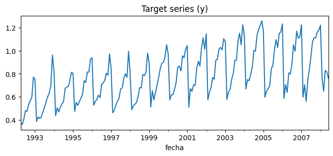
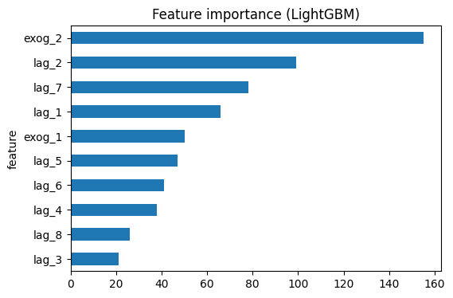
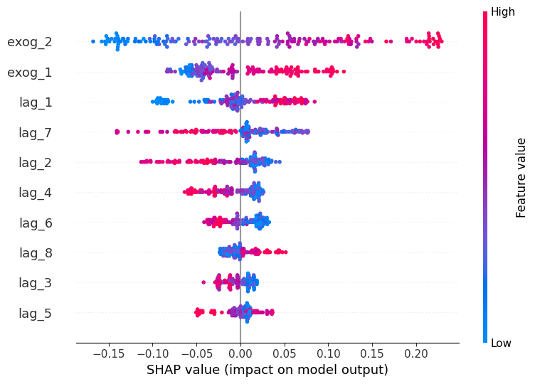

Analisa Data (A) — Reproduksi Skforecast Explainability#
Notebook ini mereproduksi contoh dari dokumentasi skforecast 0.15.1 — Model Explainability: https://skforecast.org/0.15.1/user_guides/explainability.html
Kita akan: (1) memuat data deret waktu, (2) membangun fitur lag, (3) melatih model peramalan (forecasting) menggunakan ForecasterRecursive dengan regressor LightGBM, (4) menjelaskan model menggunakan feature importance dan SHAP values.
1. Import Library#
import pandas as pd
import numpy as np
import matplotlib.pyplot as plt
import shap
from lightgbm import LGBMRegressor
from skforecast.recursive import ForecasterRecursive
shap.initjs()
---------------------------------------------------------------------------
ModuleNotFoundError Traceback (most recent call last)
Cell In[1], line 4
2 import numpy as np
3 import matplotlib.pyplot as plt
----> 4 import shap
6 from lightgbm import LGBMRegressor
7 from skforecast.recursive import ForecasterRecursive
ModuleNotFoundError: No module named 'shap'
2. Load Data#
Dataset yang digunakan adalah h2o_exog (data bulanan dengan target y dan dua variabel eksogen). Dataset ini sering dipakai pada contoh-contoh resmi skforecast.
url = 'https://raw.githubusercontent.com/skforecast/skforecast-datasets/main/data/h2o_exog.csv'
data = pd.read_csv(url)
data['fecha'] = pd.to_datetime(data['fecha'], format='%Y-%m-%d')
data = data.set_index('fecha')
data = data.asfreq('MS')
data = data.sort_index()
data.head()
| y | exog_1 | exog_2 | |
|---|---|---|---|
| fecha | |||
| 1992-04-01 | 0.379808 | 0.958792 | 1.166029 |
| 1992-05-01 | 0.361801 | 0.951993 | 1.117859 |
| 1992-06-01 | 0.410534 | 0.952955 | 1.067942 |
| 1992-07-01 | 0.483389 | 0.958078 | 1.097376 |
| 1992-08-01 | 0.475463 | 0.956370 | 1.122199 |
fig, ax = plt.subplots(figsize=(8, 3))
data['y'].plot(ax=ax, title='Target series (y)')
plt.show()

3. Split Data (Train / Test)#
end_train = '2008-01-01'
data_train = data.loc[:end_train, :]
data_test = data.loc[end_train:, :]
print(f"Train dates : {data_train.index.min()} -- {data_train.index.max()} (n={len(data_train)})")
print(f"Test dates : {data_test.index.min()} -- {data_test.index.max()} (n={len(data_test)})")
Train dates : 1992-04-01 00:00:00 -- 2008-01-01 00:00:00 (n=190)
Test dates : 2008-01-01 00:00:00 -- 2008-06-01 00:00:00 (n=6)
4. Membuat dan Melatih Forecaster#
Forecaster akan menggunakan 8 nilai lag dari y, ditambah variabel eksogen exog_1 dan exog_2, sebagai input untuk model LightGBM.
forecaster = ForecasterRecursive(
estimator = LGBMRegressor(random_state=123, verbose=-1),
lags = 8
)
forecaster.fit(
y = data_train['y'],
exog = data_train[['exog_1', 'exog_2']]
)
forecaster
ForecasterRecursive
General Information
- Estimator: LGBMRegressor
- Lags: [1 2 3 4 5 6 7 8]
- Window features: None
- Window size: 8
- Series name: y
- Exogenous included: True
- Categorical features: auto
- Weight function included: False
- Differentiation order: None
- Drop NaN from series: False
- Creation date: 2026-06-11 04:31:43
- Last fit date: 2026-06-11 04:31:43
- Skforecast version: 0.22.0
- Python version: 3.12.3
- Forecaster id: None
Exogenous Variables
exog_1, exog_2
Data Transformations
- Transformer for y: None
- Transformer for exog: None
Training Information
- Training range: [Timestamp('1992-04-01 00:00:00'), Timestamp('2008-01-01 00:00:00')]
- Training index type: DatetimeIndex
- Training index frequency:
Estimator Parameters
-
{'boosting_type': 'gbdt', 'class_weight': None, 'colsample_bytree': 1.0, 'importance_type': 'split', 'learning_rate': 0.1, 'max_depth': -1, 'min_child_samples': 20, 'min_child_weight': 0.001, 'min_split_gain': 0.0, 'n_estimators': 100, 'n_jobs': None, 'num_leaves': 31, 'objective': None, 'random_state': 123, 'reg_alpha': 0.0, 'reg_lambda': 0.0, 'subsample': 1.0, 'subsample_for_bin': 200000, 'subsample_freq': 0, 'verbose': -1}
Fit Kwargs
-
{}
5. Feature Importance#
importances = forecaster.get_feature_importances()
importances
| feature | importance | |
|---|---|---|
| 9 | exog_2 | 155 |
| 1 | lag_2 | 99 |
| 6 | lag_7 | 78 |
| 0 | lag_1 | 66 |
| 8 | exog_1 | 50 |
| 4 | lag_5 | 47 |
| 5 | lag_6 | 41 |
| 3 | lag_4 | 38 |
| 7 | lag_8 | 26 |
| 2 | lag_3 | 21 |
importances.set_index('feature')['importance'].sort_values().plot(
kind='barh', figsize=(6, 4), title='Feature importance (LightGBM)'
)
plt.show()

6. SHAP Values#
Untuk SHAP, kita memerlukan dua hal: regressor internal forecaster, dan matriks training (X, y) yang dipakai untuk fit. create_train_X_y mengembalikan matriks tersebut.
X_train, y_train = forecaster.create_train_X_y(
y = data_train['y'],
exog = data_train[['exog_1', 'exog_2']]
)
explainer = shap.TreeExplainer(forecaster.estimator)
shap_values = explainer.shap_values(X_train)
# Summary plot: pengaruh global tiap fitur terhadap prediksi
shap.summary_plot(shap_values, X_train)

# Force plot untuk satu observasi (observasi pertama)
shap.force_plot(
explainer.expected_value,
shap_values[0, :],
X_train.iloc[0, :]
)
Have you run `initjs()` in this notebook? If this notebook was from another user you must also trust this notebook (File -> Trust notebook). If you are viewing this notebook on github the Javascript has been stripped for security. If you are using JupyterLab this error is because a JupyterLab extension has not yet been written.
Jawaban Pertanyaan#
1. Analisis prediksi tentang apa?#
Analisis ini tentang peramalan deret waktu (time series forecasting) menggunakan library skforecast dengan model regressor LightGBM. Targetnya adalah memprediksi nilai y di masa depan berdasarkan nilai-nilai historisnya sendiri (lag) dan dua variabel eksogen (exog_1, exog_2). Selain melakukan prediksi, notebook ini juga melakukan explainability (interpretasi model), yaitu menjelaskan fitur apa saja yang paling berkontribusi terhadap hasil prediksi model, menggunakan dua pendekatan: feature importance bawaan model, dan SHAP values.
2. Bagaimana bentuk data trainingnya (apa saja inputnya dan apa outputnya)?#
Data training dibentuk secara otomatis oleh forecaster.create_train_X_y() dari deret waktu y dan exog. Bentuknya adalah matriks tabular:
Input (X_train) — kolom-kolomnya terdiri dari:
lag_1, lag_2, ..., lag_8→ nilaiypada 1 sampai 8 periode sebelumnya (lag features).exog_1,exog_2→ nilai variabel eksogen pada periode yang sedang diprediksi.
Output (y_train):
nilai
ypada periode saat ini (target yang ingin diprediksi), sejajar/selaras dengan baris fitur lag-nya.
Jadi setiap baris pada data training merepresentasikan: “diberikan 8 nilai y sebelumnya + nilai exog saat ini, berapa nilai y sekarang?”. Baris-baris dengan data tidak lengkap (di awal deret, karena belum ada cukup lag) otomatis dibuang.
3. Apa itu lag?#
Lag adalah nilai dari deret waktu pada periode/waktu sebelumnya, yang digunakan sebagai variabel input (fitur) untuk memprediksi nilai pada periode saat ini atau berikutnya.
Contoh: jika lags = 8, maka untuk memprediksi y pada bulan ke-t, model menggunakan nilai y pada bulan t-1, t-2, ..., t-8 sebagai fitur input (lag_1 = y di t-1, lag_2 = y di t-2, dst.). Konsep ini mengubah masalah peramalan deret waktu menjadi masalah regresi tabular biasa, sehingga model machine learning standar (seperti LightGBM, RandomForest, dll.) dapat digunakan.
4. Jelaskan proses analisis yang dilakukan dari kasus di atas#
Proses analisis yang dilakukan adalah sebagai berikut:
Memuat data deret waktu bulanan (
h2o_exog) yang berisi targetydan dua variabel eksogen (exog_1,exog_2), kemudian mengatur indeks waktunya.Membagi data menjadi data latih (train) dan data uji (test) berdasarkan tanggal cutoff.
Membangun forecaster menggunakan
ForecasterRecursivedari skforecast, dengan regressor LightGBM dan jumlah lag = 8. Forecaster ini secara otomatis mengubah deret waktu menjadi tabel fitur (lag + exog) dan target.Melatih model (fit) menggunakan data latih beserta variabel eksogen.
Menghitung feature importance, yaitu seberapa besar kontribusi tiap fitur (lag dan exog) terhadap keputusan model LightGBM secara global, lalu memvisualisasikannya dalam bar chart.
Menghitung SHAP values menggunakan
shap.TreeExplainerpada regressor internal forecaster dan matriks training (X_train). SHAP memberikan penjelasan yang lebih detail dan adil (berbasis teori game) tentang kontribusi setiap fitur terhadap setiap prediksi individual.Visualisasi hasil explainability:
summary_plot: menunjukkan distribusi pengaruh tiap fitur terhadap seluruh prediksi (pengaruh global).force_plot: menunjukkan secara rinci bagaimana setiap fitur mendorong prediksi naik/turun dari nilai dasar (expected value) untuk satu observasi tertentu (pengaruh lokal).
Secara keseluruhan, analisis ini tidak hanya membangun model peramalan, tetapi juga membuka ‘kotak hitam’ (black box) model machine learning tersebut — menjelaskan fitur (lag mana, atau variabel eksogen mana) yang paling berpengaruh terhadap hasil prediksi, baik secara global maupun untuk satu titik data spesifik.